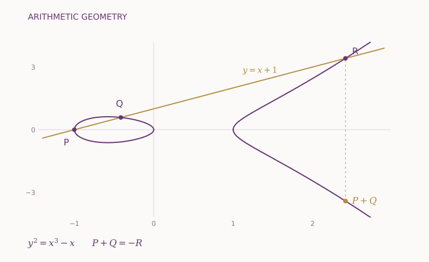
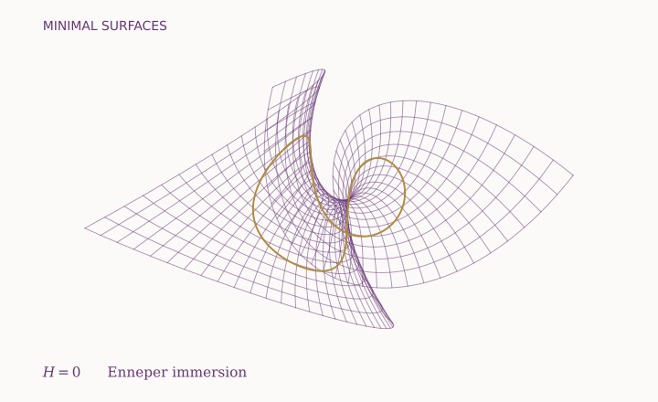
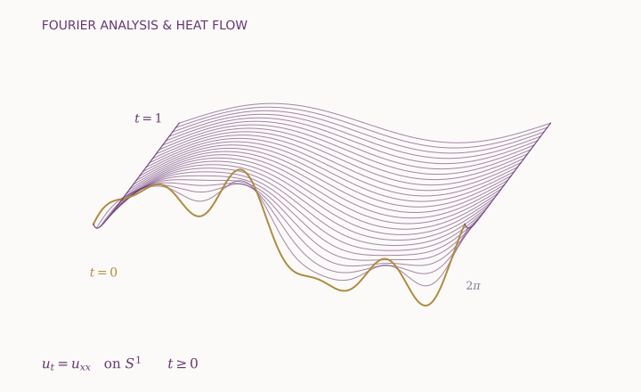
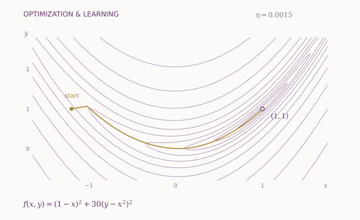

基礎訓練Foundations
代數、微積分、分析與物理，建立嚴謹的數理基礎。
MATHEMATICS · IDEAS THAT CONNECT
以嚴謹思考探索未知，以開放視野連結世界。From fundamental mathematics to connections across disciplines, explore research, learning, and collaboration.
A new perspective. A deeper understanding.
01 / STUDY
八年制數學科學理學士哲學博士銜接課程，結合紮實的數學與物理訓練、進階課程及獨立研究。前四年修讀數學理學士課程，其後四年進入哲學博士階段。
代數、微積分、分析與物理，建立嚴謹的數理基礎。
代數與數論、分析與偏微分方程、計算與應用數學、幾何與拓撲。
進階課程、論文計劃與口試，以及博士候選人資格考核。
論文研究、非本地研究經驗、博士論文及最終口試。
全面的大學教育 本科另設 39 學分大學核心要求：中文 5、英文 8、通識 19、認識中國 1、香港與國家憲制秩序 1、數碼素養與計算思維 3、體育 2。
02 / ADMISSIONS · 2027/28
數學科學理學士哲學博士銜接課程
Articulated Bachelor of Science–Ph.D. Programme in Mathematical Sciences
透過入學考試及面試甄選學生，並以預備課程銜接大學學習。
考核數學分析、線性代數與群論，以及物理。
通過甄選的申請人將獲安排參加面對面面試。
獲有條件錄取的學生須完成密集預備課程，以評估學術準備及大學適應情況；表現達標方可獲正式錄取。
| 日期 | 事項 |
|---|---|
| 2026 年 10 月 | 開放申請 |
| 2026 年 11 月 8 日 | 截止報名 |
| 2026 年 12 月 5–6 日 | 入學考試 |
| 2027 年 1 月 16–17 日 | 面試（暫定） |
| 2027 年 2 月 | 公布結果 |
| 2027 年 5–8 月 | 預備課程 |
| 2027 年 7 月 | 確認錄取 |
| 2027 年 9 月 | 新學年開始 |
日期如有調整，以學院最新公告為準。
03 / RESEARCH
Deep theory and practical questions belong together. Explore connections across pure mathematics, applied mathematics, and artificial intelligence.

橢圓曲線上的割線法：三個交點與群加法。
01 / STRUCTURE & SYMMETRY
從數的規律到抽象結構，探索算術、幾何與對稱之間的深層聯繫。
Finding patterns in numbers and the structures that connect arithmetic, geometry, and symmetry.

Enneper 極小曲面：平均曲率為零的參數曲面。
02 / SHAPE & SPACE
理解空間的形狀與曲率，發現連續變化之中不變的數學結構。
Understanding the shape of spaces, how they bend, and what remains invariant as they change.

圓周上的熱方程：高頻 Fourier 模態衰減更快。
03 / CHANGE & COMPLEXITY
以方程理解變化，以模型連結數學、自然科學與真實世界。
Studying change through equations and building mathematical models of complex systems.

非凸優化中的梯度下降：沿 Rosenbrock 谷地接近極小值。
04 / LEARNING & INTELLIGENCE
探索智能學習的數學基礎，連結優化、統計推斷與科學計算。
Exploring the mathematical foundations of machine learning, optimization, and scientific AI.
數學與智能，在交叉中啟發新思路。
New ideas at the intersection of mathematics and intelligence.
04 / OUR PEOPLE
Get to know the people behind the questions.
These profiles illustrate a faculty directory.
Number theory, arithmetic geometry
Differential geometry, geometric analysis
Partial differential equations, fluid dynamics
Representation theory, combinatorics
Topology, knot theory
Probability, mathematical modelling
Showing 6 sample faculty profiles
No profiles match your search. Try another name or select “All areas”.
05 / SEMINARS & EVENTS
A space to share ideas, challenge assumptions, and learn something unexpected.
Maya Chen · Sample speaker
Elias Rahman · Sample speaker
Sofia Patel · Sample speaker
Showing 3 sample events
THERE IS ALWAYS ANOTHER QUESTION.